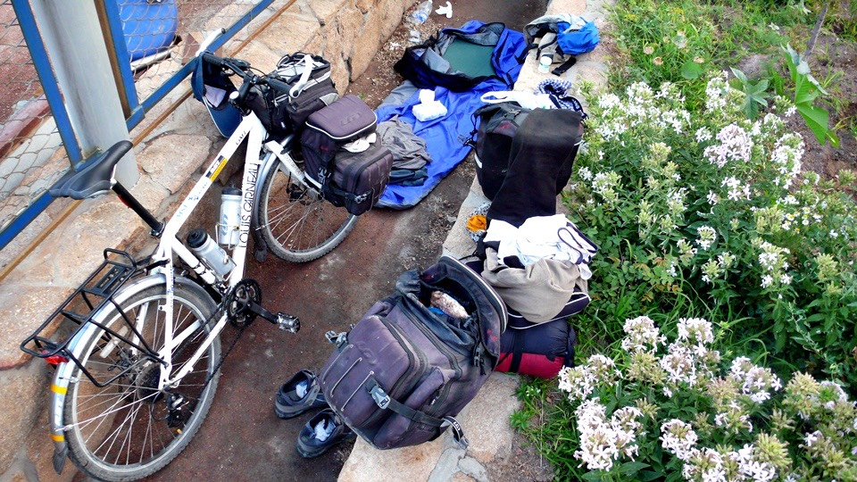

I woke up at dawn. I didn’t sleep well.
I spent the entire night closing my eyes and volunteering my blood to the mosquito inside my personal tent.
For the record, I had more than 40 mosquito bites all over my body.
I was applying the mentholatum (we used a lot in Taiwan for little bit of everything)
and found myself basically rubbing that all over my two arms.
The experience I encountered yesterday slowed down my brain function, so it took me a while to reset my priority.
Bu the sudden tummy ache reminded me that I also had diarrhea and vomiting symptom too.

Therefore, the first thing now was to find a restroom.
I was lucky enough to know that god has not abandoned me yet.
He gave me a gas station and a quiet space to clean up my body.
My body ached, and tired, and I still had to repack everything.
I had no energy nor mood to check if anything, other than my cell phone, was missing.
I had vomited pretty much everything yesterday, and I couldn’t make myself to eat anything now.
The only thing I could take at this moment, even from a five-star restaurant would be, water.
Before I left this city, the only thing I knew I had to do was to get my cell phone back,
no matter it was functional or not, no matter it was in good shape or only debris was left.
I had got to get my cell phone back, no matter what it took.
I only hope that Ahloze was “normal” after a good night sleep, otherwise I might have to fight with him to get my phone back.
The restaurant was closed at this hour, just as I expected.
I told the cleaning lady that I came to pick up my cell phone.
But she asked me to come back later when others came in to work.
Without much luck, I went to buy myself a bottle of water,
and I found my body finally accepted the water without kicking it out right at the moment I gulped it down in my throat.
I got my sense of humor back, I guess. Because I found it funny that even at this early hour,
the store couldn’t give me 30 tengs back when I handed him a 100 tengs bill.
I was wondering he was going to deal with this situation, and the answer was:
I got some chewing gums and a box of matches.
It was still early, so I went around the city to see if I could find any internet. The answer was of course, N-O.
Back to the restaurant around 8 o’clock and it was still closed.
I knocked the door and saw the same lady that I met earlier.
I insisted to get my cell phone right then, so unwillingly,
she brought me to the back and showed me the phone in the restaurant.
I said I needed my own cell phone, which Aloze took it from me last night.
She probably couldn’t figure much of what I was saying, but she did recognize the name, Aloze.
So she showed me his room and I found that he was still asleep.
I asked the lady,” Do you happen to know he is a crazy nut?”
I looked around everywhere between the restaurant and the backyard.
Finally, I found my cell phone outside of the restaurant, it was scratched, badly, but at least functional.
I couldn’t wait to leave this city.
Who cared if I didn’t get the chance to take a swim here or not?
At the border of Barhashi, a waiter waved to invite me for breakfast, and I was hesitated.
Yesterday’s experience broke my instinct to trust any human beings, for a while, I guess.
However, I repeatedly told myself that I should not ruin my journey in Kazakhstan just because of a nut.
I was impressed of how friendly Kazaks are.
I didn’t want to change that for that nut, either. So, I stopped and took a look at that restaurant.
I told myself that nice people get up early, and I walked over with courage.
The owner and his wife were really nice people. I told them that I could only have some milk tea because of my stomach.
The lady still brought me some sliced tomato, cucumber and three eggs.
The Kazaks are still nice people; yesterday was purely a bad luck day for me.
This “unlucky” experience also reminded me to behave myself during the trip.
Think about it, I always told people that I was from Taiwan,
which sort of made me an unofficial “Taiwan ambassador” to the locals here.
They would also make their judgment about Taiwan people from my behavior.
I am sure if I did something to irritate people I met here, not only they would loathe,
they probably would think “All people from Taiwan are the same”, in a bad way.
The breakfast was great, and the people in the restaurant were even nicer.
We talked about my trip and they offered me a couple of tips for my bike from here to Almaty,
which I found out all the information they gave me was not exactly “right”.
They told me that I would have a great biking experience from here to their capital.
The road condition would be fine and there would be many stores and restaurants.
I was so relived, until I was on my way again. All I could see was just deserted lands here and there.
The owner gave me a brand new white cap, which he said I needed that for the sun.
I pointed to my head to show that I had already had one,
but he insisted that it was a gift from a Kazak and it represented the friendship.
After filling up my stomach, I felt so much better—physically and mentally.
Well, since I had decided to continue biking for today, I knew I had to replenish my energy source—food.
I pointed to my empty plate and took out my money. The lady told me was 100 tengs, which was dirt cheap.
To express my appreciation, I gave her 200 and asked her to keep the change (by waving my hand).
I was not rich, but I was very grateful for their kindness when I needed the most.
They also let me fill up my water bottles: one with water, one with hot sweetened black tea.
Before I left, I noticed that the wind was not blowing to the usually direction.
I pointed at the chimney and coughing at the same time to say the effect of that air-pollution.
They all agreed with me by badmouthing those chimneys.
Honestly speaking, I was pretty tired of the scenery in Kazakhstan.
It seemed like everywhere is the same: boring.
All I could do on the road was listening to the exhausting pipe and guessing how many tires the car behind me had,
was that a sedan or a truck, or would that car yield to me or just pass me by.
Sometimes if it didn’t feel right, I would yield to whatever car behind me.
After all, there were already too many dead animals on the road, there was no need to volunteer one more.
Looking at those dark clouds, feeling the wind blowing from one side to the other, and drizzling was just the beginning.
I thought maybe this light rain could keep me awake, which was not a terrible idea.
There were water puddles everywhere from the raining yesterday,
and those trucks ran fast enough to splash the dirty water all over my Dido and me.
The rain was on and off, and I could see the real evil—the dark cloud that occupied the entire sky, was still waiting for me.
The deafening thunder marked the entering of the evil’s territory,
and the strong wind tried its best to push me to the other side of the road.
The rain was loud and heavy, sometimes I wondered it was raindrops or hails that were falling from the sky.
Anyway, I chose to stop for a while by the drainage pipe area.
A couple of times, I thought of camping in places like this.
However, when I took a closer look, it was full of dung, which totally put off this “dream” of mine.
The wind blew sideways, and that is why hiding here worked. See! A frog just jumped out of nowhere after the rain.
Finally, the rain kind of stopped. Or you could say the “evil” was blown away by the wind,
therefore, the rain had to move with it.
Wiped away the water on Dido, I continued to bike.
The air was so fresh after the rain, the temperature was also cooling down to a comfortable level.
I closed my eye to breathe the clean air, AND… my face was wet by the truck just passed by.

I only saw one building so far, and I couldn’t figure out what kind of store/restaurant it was.
I went closer and found that was empty and deserted.
Around 3 o’clock, finally a real restaurant appeared.
Of course I had no idea what the sign said, so I went in and asked the daughter of the owner.
She told me that was her brothers’ names.
She has two brothers and both of them worked in another city,
so she and the grandma took care of the store now (so it was a restaurant and a store after all).
The grandma came out and asked me what she could do for me.
I gestured that I needed something to drink, and she gave me a big bottle of Coke.
Well, I was feeling better, some coke should be OK.
I sat outside drinking my coke, and the grandma asked me where I was during the heavy rain.
I replied by squatting down and covering my head with my arms, and the grandma was laughing out loud.
She pointed the wooden platform area and asked if I would like to take a nap there.
Honestly, I didn’t have any motivation to ride any longer for today,
what I really would like to do was to spend the night here
The rain filled up the gutter and the wooden platform area was a bit wet.
The grandma put a big rug down, and I took out my sleeping bag. Time for a nap, how nice!
I slept from 3 to 8 pm, and I walked somewhere outside to pee.
The sunset made my shadow look really long, especially the legs.
There was a power pole outside of the house,
and all I could think of now was, how to “borrow” the electricity for my laptop.
However, it looked like a rather complicated apparatus.
I shall wait until 9 o’clock, which was the time the electricity was delivered to every household.
They had two dogs, both are BIG dogs. They were chained outside because they barked to people.
I told them that they should learn their lesson while being timed out here.
On the other hand, a cute little kitten was running freely in and out of the house.
I cleaned up my face, cleared up my mind, and started talking to those two ladies.
The daughter’s name was Shartena, 14. This is their restaurant, store and also their house.
This place is called “Backdownada”(just a phonetic translation, couldn’t find the name),
and their house is the only human house in this town.
The grandma’s name is “Numina”. I bet she didn’t expect me to take a 5-hour nap when she asked me this afternoon.
She offered me food, and I thought hot milk tea was my safest bet.
However, as kind and considerate as the grandma was, she brought me rice and burger,
with some juicy sauce on top of it, the whole meal was tender and delicious.
I finished the whole plate, which meant I was recovering even faster than I expected.
The old grandma asked if I really wanted to continue to bike, or if I would like to spend the night.
I was a bit embarrassed but glad that I was able to camp outside of this house.
The kitten was busy inspecting my tent and the packs while I was setting up the tent.
Finally, 9 o’clock came, which meant, electricity came.
The light brought quite a few customers, so the daughter and the grandma were very busy taking care of the business.
I, in the meant time, was trying my best to charge whatever needed to be charged.
The grandma was worried the safety of my packs.
Since there would be even more customers-- such as truck drivers, come in later,
she suggested me to bring my packs inside of the house to be safe.
I just realized that my everyday in Kazakhstan was a camping day,
which was a challenge to me, both mentally and physically.
I thought camping was fun at the beginning. After a while, I thought camping was tiresome and “dirty” (no shower possible).
As for now, I was kind of getting used to it. Give me a roof, give me some light, and I was happy.
The trip in Kazakhstan was not as easy as that in China, and this was my 10th day here.
I should really try my best to get used to it. Maybe the trip in Russia would be even worse.
For what happened yesterday, I didn’t do my blog last night,
because I didn’t want to give out the words like
“ Kazakhstan is a place for people who like to see flies everywhere”,
or
“ Kazakhstan is a boring place and all you could see is deserted space here and there”.
I would prefer to review yesterday when I had some time later.
Plus, there was no internet available here anyway, why not sleep more tonight, so I could get well soon.
The grandma asked how my schedule was like tomorrow;I told her that I would leave around seven.
She explained that if they were not up yet by the time I was leaving, I should just knock the door to get my packs.
After saying goodnight, I went to my tent to get ready for a good night sleep. I really like sleeping in the tent.
It was very quite when I got up to pee in the middle of the night.
The electricity was gone, so was the noise, including the dogs that barked wildly during the day.
Shivering a bit, I ran back to my warm sleeping bag. I still got a couple of hours to sleep before it’s dawn again.